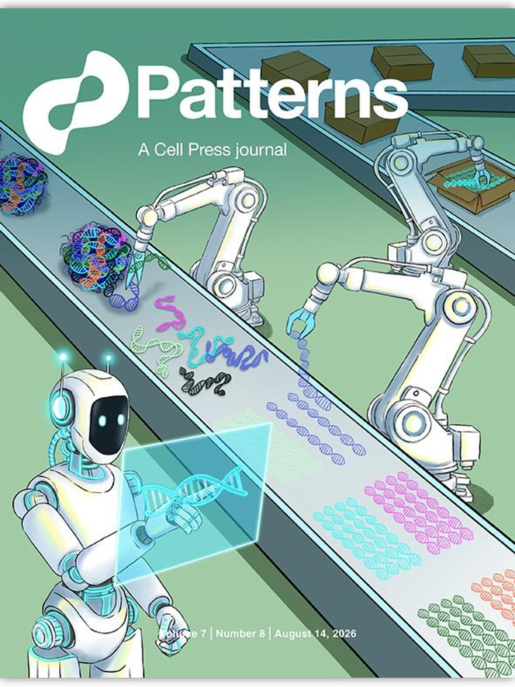

SEQUENCE & MOLECULAR DESIGN
Motif
Explore DNA, RNA, and protein sequences, molecular designs, and Sanger traces in a persistent workbench.

BIOMASTER 2.0 / BUILT FOR BIOINFORMATICS
Explore sequences, genomes, and data in one project.
Work with AI through Chat, Notebook, or Team.
Open dedicated biological workbenches when you need them.
macOS Apple silicon & Intel · Ubuntu x64 · Desktop & WebUI
Inspect the RNA-seq sample sheet and propose a QC plan.

PatternsBioMaster 1.0 · Cover articleView the published cover on Patterns ↗ VIEW THE ISSUEBIOMASTER 1.0 / PUBLISHED RESEARCH
Our original research introduced BioMaster 1.0: a multi-agent system for automated bioinformatics. It was featured on the cover of Patterns, a Cell Press journal.
Su, Feng, Lu et al. · Patterns 7(8), 101611 (2026)
Cite the published BioMaster 1.0 paper. For BioMaster 2.0 work, also report the software version you used.
Su, H., Feng, J., Lu, Y., Xu, Y., Yang, J., Lu, H., Yang, J., Yang, X., Xie, S., Long, W., Wang, C., Hou, Y., Zhu, T., & Zhang, Y. (2026). BioMaster: Multi-agent system for automated bioinformatics analysis workflow. Patterns, 7(8), 101611. https://doi.org/10.1016/j.patter.2026.101611
Su H, Feng J, Lu Y, Xu Y, Yang J, Lu H, Yang J, Yang X, Xie S, Long W, Wang C, Hou Y, Zhu T, Zhang Y. BioMaster: Multi-agent system for automated bioinformatics analysis workflow. Patterns. 2026;7(8):101611. doi:10.1016/j.patter.2026.101611
@article{su2026biomaster,
title = {{BioMaster}: Multi-agent system for automated bioinformatics analysis workflow},
author = {Su, Houcheng and Feng, Junning and Lu, Yawen and Xu, Yucheng and Yang, Jinming and Lu, Haojie and Yang, Jixin and Yang, Xu and Xie, Sirui and Long, Weicai and Wang, Chengrui and Hou, Yusen and Zhu, Tingyu and Zhang, Yanlin},
journal = {Patterns},
volume = {7},
number = {8},
pages = {101611},
year = {2026},
doi = {10.1016/j.patter.2026.101611},
url = {https://doi.org/10.1016/j.patter.2026.101611}
}
The published systemThe architecture and experiments described in the paper.
The next chapterToday's workbench, with Chat, Notebook, and Team projects.
Choose a project type when you create it. BioMaster keeps work connected to its directory, while the interface gives you the right tools for that kind of work.
Keep data and generated files in a folder you can open outside BioMaster.
Review outputs, execution history, and the evidence behind a conclusion.
Delegate a goal, explore cell by cell, or coordinate a team.
Choose a workspace when you create your project.
YOU SET THE DIRECTION.
Describe your data, your question, and the result you need. Break complex work into a plan, inspect progress, and steer or pause along the way.
Explore ChatCheck the sample sheet and propose an RNA-seq QC plan.
I will inspect the inputs, flag missing metadata, and outline checks for your review.
↳ read · samples.csvInterface illustration · Chat task with a project directory
THINK WITH YOUR RESULTS.
Write in Markdown, compute with Python and Bash, and collaborate through Prompt cells. Inspect each result before deciding what to change next.
Explore NotebookRecord methods and observations beside the analysis.
samples = read_table("samples.csv")
samples.describe()Which samples need another check?
Interface illustration · Notebook cells and a Files tab
ONE GOAL. SHARED PROGRESS.
Organize work into issues, coordinate through discussion, and review deliverables independently. Follow the whole project or inspect any individual task.
Explore TeamInterface illustration · Team goal, issues, and review
SPECIALIST TOOLS, ONE PROJECT
Open specialist views for molecules, genomes, genomic visualizations, and workflows. These integrated workbenches launch from a BioMaster Chat project, so the research stays connected to a real project directory.
Explore DNA, RNA, and protein sequences, molecular designs, and Sanger traces in a persistent workbench.
Inspect reference genomes with annotations, alignments, variants, and quantitative tracks side by side.

Compose linked genomic views and semantic zoom from a reusable visualization specification.

Choose and configure a registered Nextflow workflow, review its plan, authorize execution, and inspect results.

PubMed & PMC · ClinVar · Ensembl · UniProt
How to open a workbenchGenuine BioMaster workbench UI captured in English with demo data in a local browser test. The SmartFlow image uses a test-only Nextflow run, not a biological analysis. Workbenches open in Chat projects; SmartFlow execution requires a configured Nextflow runtime.
Keep goals, execution, and artifacts together.
Continue the work with its history in view.
Each project binds its tasks and history to a real directory for project files.
In Team projects, see whether a registered file is current, outdated, or missing.
Inspect requirements and evidence. Earlier reviews stay tied to the version they checked.
Keep the version that was recorded.
Make subsequent changes visible.
The experiment trace records observed changes.
Validate conclusions against your data and methods.
From the original research to the next workbench. Meet the people who shaped each version.
Contributions are listed by version. Membership reflects the team today.
Assistant Professor
PhD student
PhD student
PhD student
Assistant Professor
PhD student
PhD student
PhD student
PhD student
PhD student
These contributors are the authors of the BioMaster 1.0 paper in Patterns. Names are grouped by present-day membership.
THE NEXT QUESTION STARTS HERE.
Find the right BioMaster package, then follow the first-run guide to connect your model and start a project.
BioMaster 2.0.0-beta.1 is available for macOS Apple silicon, macOS Intel, and Ubuntu x64. Choose a desktop installer or a WebUI archive for the computer that will run BioMaster.
Public installers are not available yet
Public installers are available
Download from GitHub Release notes and checksums Read installation & first-run guideFor M-series Macs.
Download desktop DMG ↓Download WebUI ZIP ↓Open the DMG and drag BioMaster.app to Applications.For x86-64 Macs.
Download desktop DMG ↓Download WebUI ZIP ↓This Intel beta is unsigned; see the installation guide before opening it.For 64-bit Ubuntu.
Download desktop DEB ↓Download WebUI TAR.GZ ↓The AppImage is also available.Want to use BioMaster in a browser or install it on a remote server? Choose the WebUI archive for the host computer, extract it, then run ./biomaster web. For remote access, keep the service private and connect securely; see the WebUI setup guide.
This is a beta release. Windows is not included. Verify downloads against the release checksums. Questions? Email biomaster@hkust-gz.edu.cn.